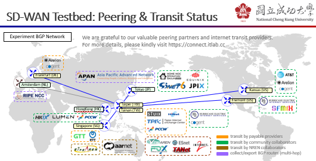
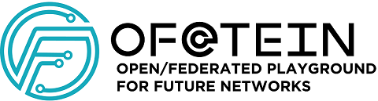

Hosted on GitHub Pages: Theme by orderedlist
About ITLab Network (AS38254)

- A non-profit network for research and education purposes.
- The testbed facility is co-sponsored by:
- National Center for High-performance Computing
- National Science and Technology Council
- Taiwan Academic Cybersecurity Center
- Research projects using this testbed are sponsored by:
Operators
- Faculty:
- This BGP experiment network is operated and maintained by P.-W. Tsai and ITLab members since 2021.
Overview

* icons are used for reference purposes only - copyrights belonging to their respective registered owners.
Facility
- Locations:
- Taiwan (Taipei) - Chief/LY
- Taiwan (Zhongli) - NCU/TR-CILab
- Taiwan (Tainan) - NCHC/TN
- United States (Fremont) - HE/FMT2
- United States (Kansas) - NOCIX/MCI
- German (Frankfurt) - NTT/FRA1
- Other landing nodes (Singapore, Malaysia...)
- Joined IX:
- Amateur Radio Internet Exchange (ARIX)
- FogIXP
- Formosa Open eXchange (FOX)
- GPC Missouri
- KleyReX
- Lambda-IX
- LOCIX Frankfurt
- Student& Technology United Internet Exchanges (STUIX)
- Private Network Interconnect/Peering:
- Hurricane Electric (AS6939)
- TWAREN (AS7539)
- Asia Pacific Advanced Network - Japan (AS7660)
- CloudFlare (AS13335)
- Google LLC (AS15169)
- Amazon.com (AS16509)
- Chief Telecom Inc. (AS17408)
- TANet (AS17717)
- Meta (AS32934)
- Home NOC Operators' Group (AS59105)
- Route Collector:
(Prefer to establish peering session via IX connection)
SDN-based BGP Playground

- This experiment network is built to carry out "OF@TEIN: Toward an OpenFlow-enabled SDN (Software-Defined Networking) Infrastructure over TEIN" and "ISIF@Asia: SDN-based Internet eXchange Playground for Networkers" projects supported by European Union and APNIC Foundation, respectively.
- For university and academic institute collaborators, it is possible to reach the playground in following locations:
- National Cheng Kung University (Tainan)
- Singapore Institute of Technology (Singapore)
- Universiti Malaya (Kuala Lumpur)
- Collaboration/Peering request:
- Please contact the NOC for further information : )
- (review required) For additional PCCW transit service (supported by RAID Networks), please also submit the Letter of Authorization
- It is fair use, non-commercial, strictly only for research and education purposes. The violation activities are forbidden, such as spam, (d)dos, scan, proxy, VPN, TOR... and any other one that is illegal under domestic laws. We reserve the right to terminate the connection at any time without giving any reason.
Acknowledgements
- National Center for High-performance Computing: Colo
- TaiWan Advanced Research and Education Network: IPT
- Nato Research Ltd.: Internet resource
- T.-Y. Yu: Internet resource and IPT
- Licson Internet Service/Eons: Internet resource and IPT
- Hurricane Electric: IPT
- AMPRNet: Internet resource
- August Internet: IPT
- Home NOC Operators' Group: IPT
- Yuan-Jhen Info., Co., Ltd: IPT
- RAID Networks: Internet resource and IPT
- Qostoz: IPT and 400G Infra
Statistics
- Here's a live list of AS38254 peers, powered by RIPEstat.
- Last update: loading...
- Current upstreams:
- loading...
- Current peers:
- loading...
- Current downstreams:
- loading...